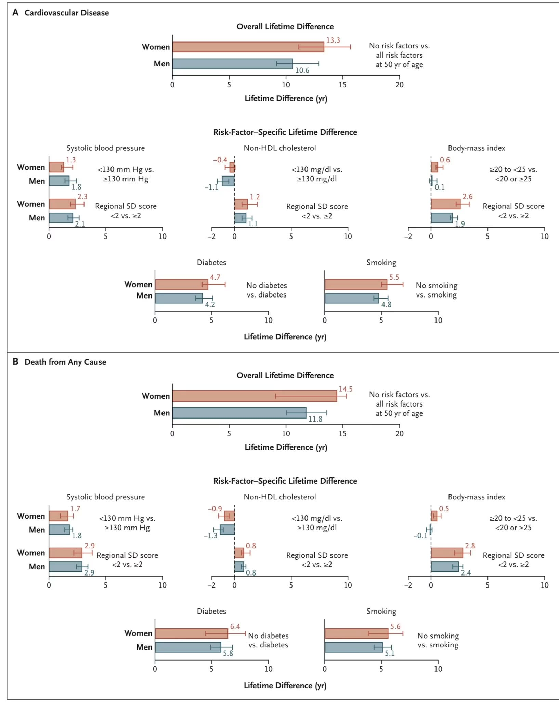
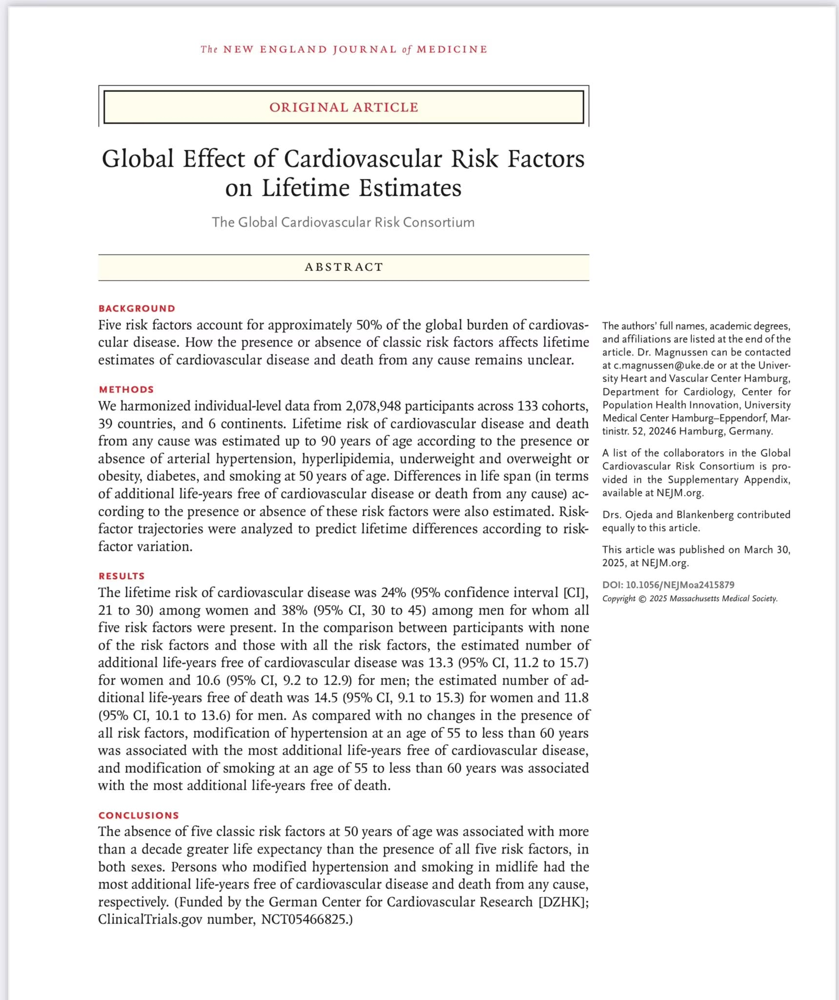

What if your midlife health choices could give you a decade more of life—free of cardiovascular disease?
A new global analysis of over 2 million participants across 39 countries published in NEJM reveals the profound long-term impact of managing five key modifiable risk factors: high blood pressure, non-HDL cholesterol, BMI, diabetes, and smoking.
Paper · N Engl J Med · 2025Global Effect of Cardiovascular Risk Factors on Lifetime Estimatesnejm.org
At age 50, people with none of these risk factors lived up to 13.3 more years free of cardiovascular disease and 14.5 more years without dying from any cause compared to those with all five.
At age 50:
- Women with no risk factors had a 13% lifetime risk of CVD vs. 24% with all 5 risk factors.
- Men had a 21% vs. 38% risk, respectively.
- The lifetime risk of death was 53% (women) and 68% (men) with no risk factors, increasing to 88% (women) and 94% (men) with all risk factors.
Although only approximately 50% of cardiovascular disease events are attributable to the five classic risk factors, nonclassic risk factors—such as poor nutrition, insulin resistance and chronic inflammation due to excess calorie intake, sedentary lifestyle, psychosocial stress, poor sleep, air pollution—may account for residual cardiovascular disease risk and may be related to myocardial infarction among persons without standard modifiable cardiovascular risk factors.
Even more compelling: modifying risk factors between ages 55 and 60 still made a difference. The number of additional life-years was higher for participants who controlled a greater number of risk factors. The greatest gains came from controlling hypertension and quitting smoking.
Midlife modification (ages 55–60):
- Hypertension control led to the most additional CVD-free years.
- Smoking cessation had the greatest impact on overall mortality.
This research shifts the narrative from risk prediction to healthy life expectancy—empowering individuals to take action and clinicians to focus on impactful interventions.
Key takeaway: It's never too late to change your trajectory. Even partial risk-factor modification in midlife can add up to a decade or more of life without cardiovascular disease or premature death. Prevention works—and it's powerful.
#CardiovascularHealth #PublicHealth #GlobalHealth #PreventiveMedicine #RiskFactorModification #LifecourseHealth #Healthspan


